Arbres interactifs
Parcourez jusqu’à 10 générations, zoomez et déplacez-vous librement.
EXPLORER · COMPRENDRE · TRANSMETTRE
Une application moderne et intuitive pour consulter, explorer et partager votre histoire familiale en toute simplicité.
GEDCOM · HEREDIS HMWZ · ANDROID · iOS
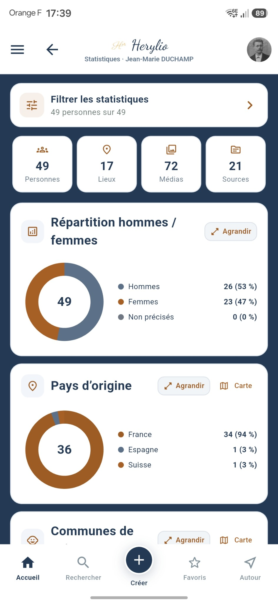
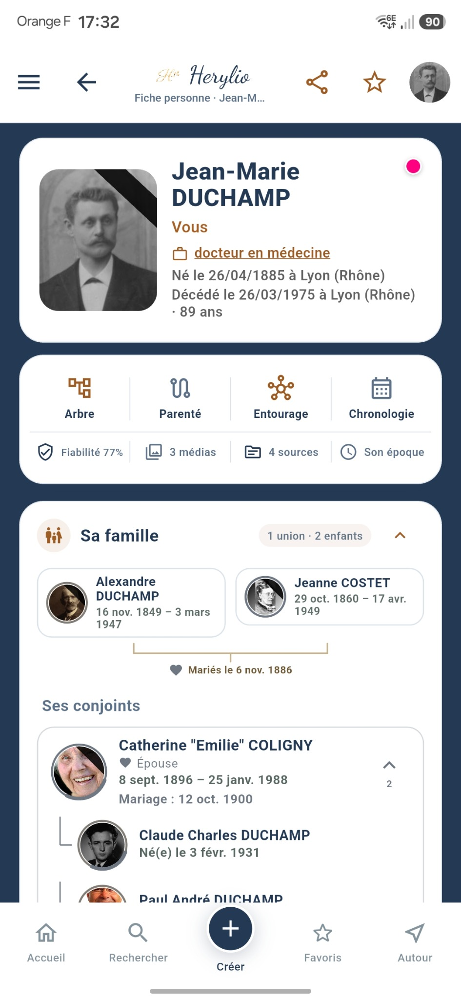
Parcourez jusqu’à 10 générations, zoomez et déplacez-vous librement.
Suivez vos ancêtres dans le temps et dans l’espace.
Découvrez votre généalogie sous un nouvel angle.
Transformez vos données en un véritable livre de famille.
Repérez les incohérences et les doublons probables.
Explorez les liens directs, par alliance et familiaux élargis.
VOTRE HISTOIRE, AUTREMENT
Herylio est pensé pour la consultation et la découverte. Retrouvez les personnes de votre généalogie, leurs familles, leurs lieux, leurs événements, leurs médias, leurs sources et les liens qui les unissent.
Importez plusieurs généalogies GEDCOM ou Heredis HMWZ. Vous pouvez aussi extraire une branche, la partager et la raccorder à une personne déjà présente, tout en conservant vos données sur votre appareil.
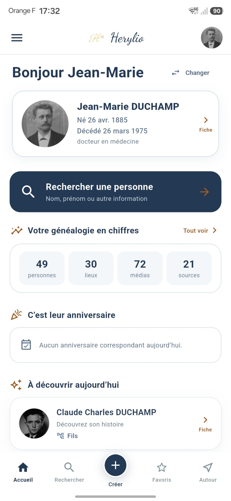
TOUTE VOTRE HISTOIRE À PORTÉE DE MAIN
Herylio transforme les données de votre arbre en écrans clairs, interactifs et faciles à parcourir.
VUE D’ENSEMBLE
Retrouvez immédiatement votre personne de référence, les chiffres clés de votre généalogie, les anniversaires du jour et une personne à redécouvrir. La recherche reste accessible en permanence.
FICHE PERSONNE
Photos, dates, famille, événements, lieux, sources, médias et chronologie sont réunis dans une fiche lisible. Passez naturellement d’une personne à ses proches sans perdre le fil.
ARBRES INTERACTIFS
Choisissez le nombre de générations, affichez les ascendants ou les descendants, puis zoomez et déplacez l’arbre avec les doigts. Chaque personne reste accessible d’un simple appui.
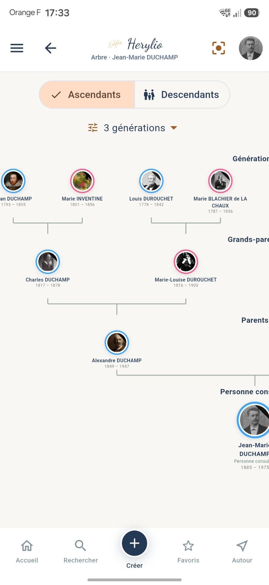
LIENS DE PARENTÉ
Herylio affiche le chemin familial de manière visuelle et calcule les parentés directes, par alliance ou élargies. Un moyen simple d’expliquer les relations parfois complexes d’une famille.
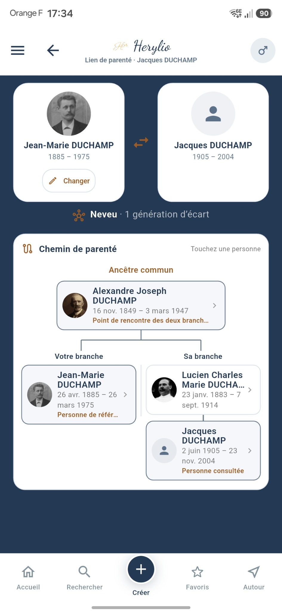
BRANCHES HERYLIO
Exportez une branche, importez-la dans une autre généalogie et analysez les correspondances proposées. Herylio vous aide à raccorder les personnes communes tout en limitant les doublons et en préservant les informations utiles.
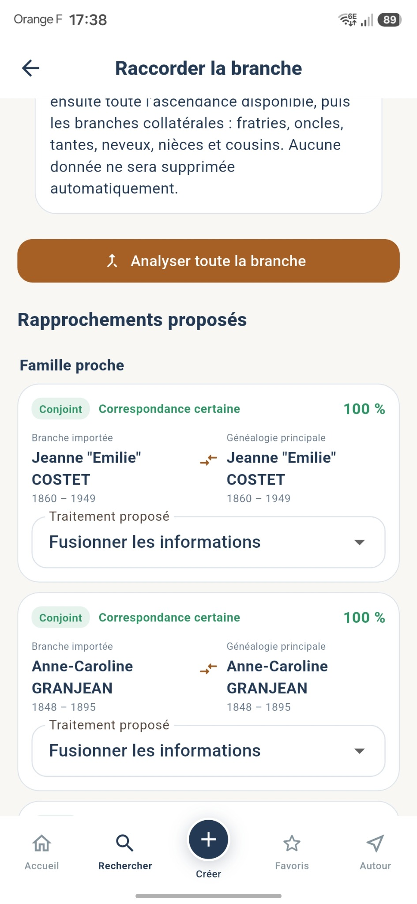
ANNIVERSAIRES
Consultez les naissances, décès et mariages d’un mois donné. Les journées se replient pour parcourir rapidement une longue liste et chaque personne peut être ouverte directement.
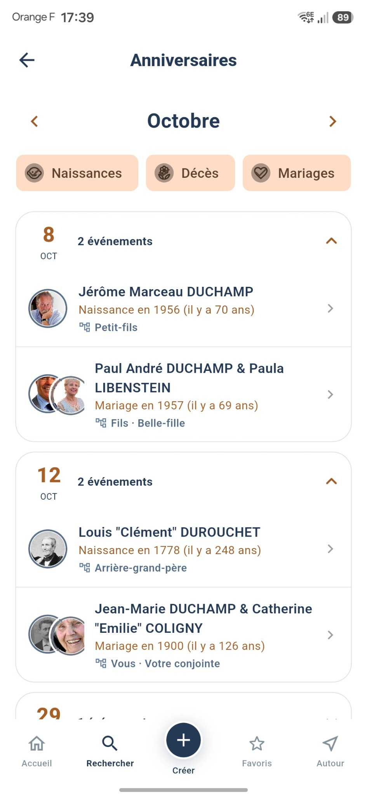
QUALITÉ DES DONNÉES
Dates incohérentes, événements douteux, problèmes de parenté ou d’union : les contrôles sont regroupés par catégorie. Recherchez, filtrez, excluez les faux positifs et exportez la liste à traiter.
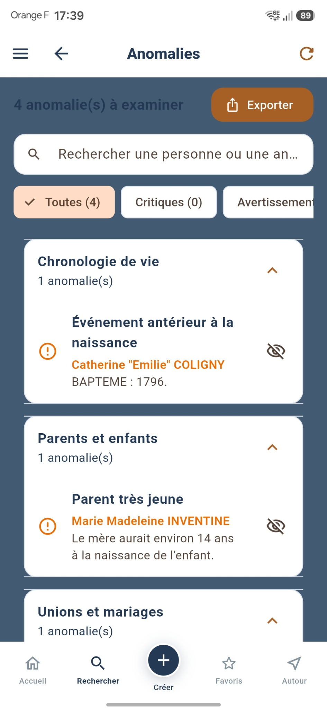
STATISTIQUES
Répartition femmes-hommes, pays et communes d’origine, évolutions des naissances et décès, prénoms, noms et professions : explorez les grandes tendances de votre histoire familiale.
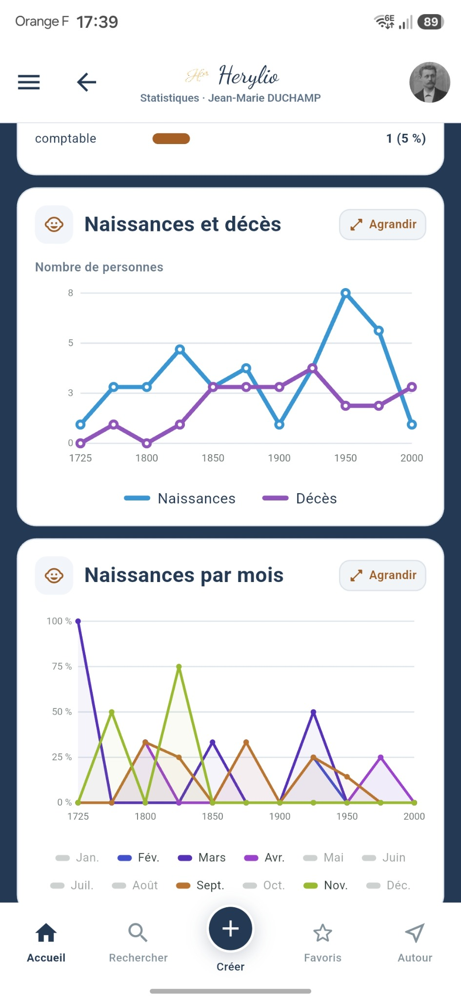
CARTES ET LIEUX
Visualisez les événements familiaux sur une carte, choisissez un rayon et retrouvez les personnes associées aux lieux environnants. Chaque résultat ouvre directement la fiche correspondante.
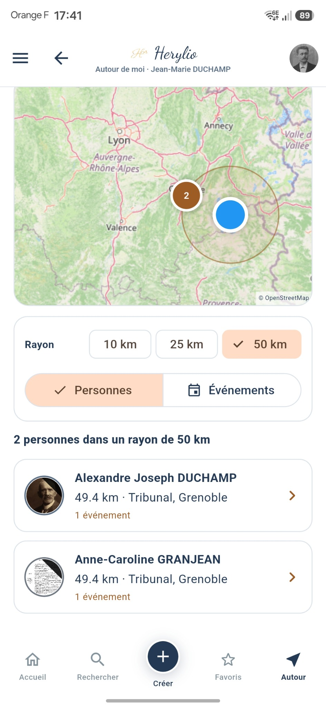
SON ÉPOQUE
Une ligne du temps rapproche les événements familiaux des faits historiques, inventions et évolutions de la société. L’histoire personnelle retrouve ainsi le monde dans lequel elle s’est déroulée.
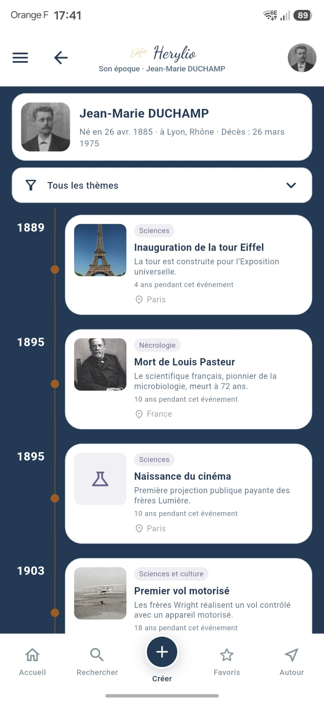
COUSINADES
Sélectionnez les participants, organisez les familles, suivez les invitations et préparez les documents utiles. Fiches avec QR code, badges, listes, trombinoscope et arbres deviennent accessibles depuis une même cousinade.
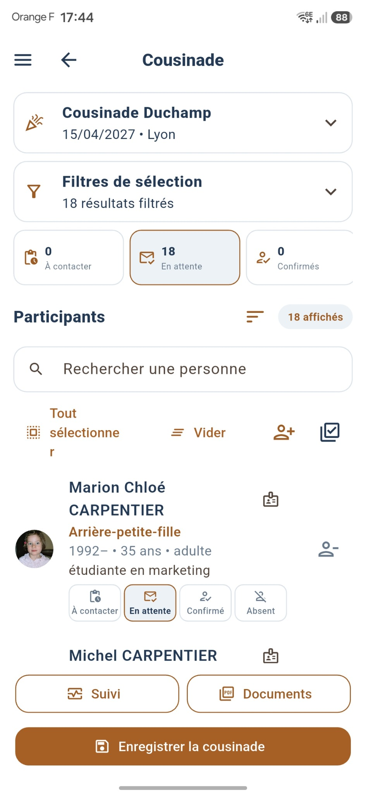
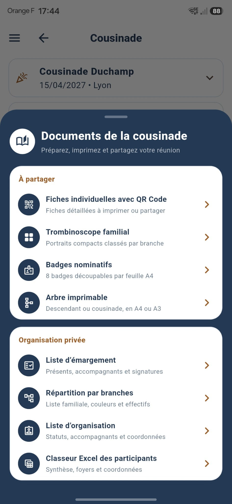
LIVRE FAMILIAL
Composez un livre en PDF ou DOCX avec les fiches, portraits, liens familiaux, chronologies et textes générés à partir de votre généalogie. Un document pensé pour être conservé et transmis.
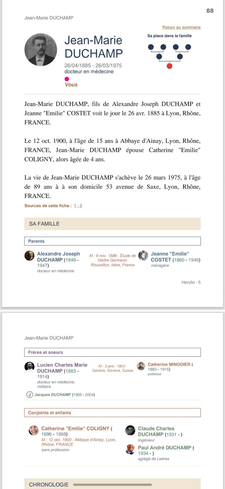
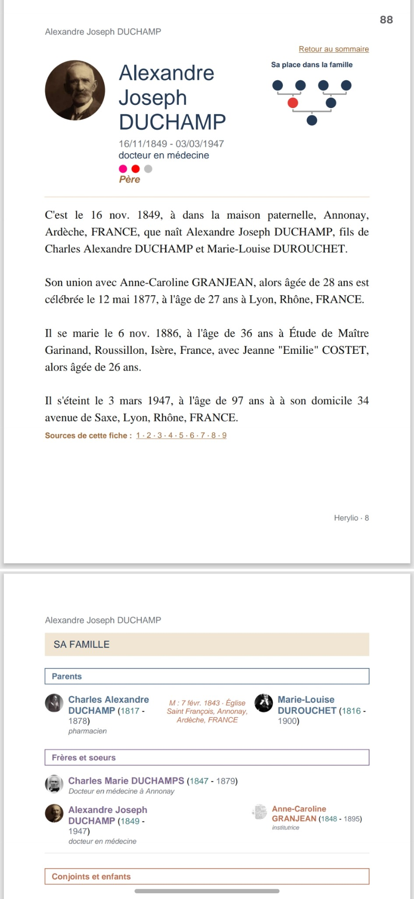
MÉTIERS ET QUOTIDIEN
Herylio explique les métiers rencontrés dans votre arbre : définition, conditions de travail, place dans la société, outils et savoir-faire. Une façon concrète de mieux comprendre la vie quotidienne de vos ancêtres.
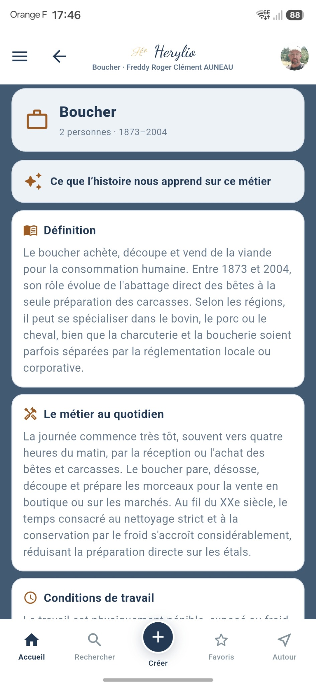
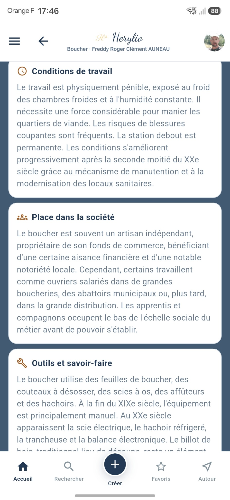
TRANSMETTRE
Composez un ouvrage à partir de votre généalogie : fiches, liens familiaux, chronologie, photos et textes. Herylio vous aide à transformer vos recherches en un récit à conserver et à partager.
Simple à prendre en main, riche en fonctionnalités et respectueuse de vos données.
Une navigation claire, même avec une généalogie importante.
Vos généalogies sont traitées et conservées localement sur votre appareil.
De nouvelles façons d’explorer et de transmettre votre histoire.
Une question sur l’utilisation ou vos données ? Écrivez-nous ou consultez la politique de confidentialité.
3L GÉNÉALOGIE
3L Généalogie est l’éditeur de Herylio, une application née de la passion pour la généalogie et les nouvelles technologies.
Des recherches généalogiques peuvent également être réalisées ponctuellement, sur demande.
Voir les nouveautés de Herylio →« Nos racines nous relient, nos histoires nous rassemblent. »